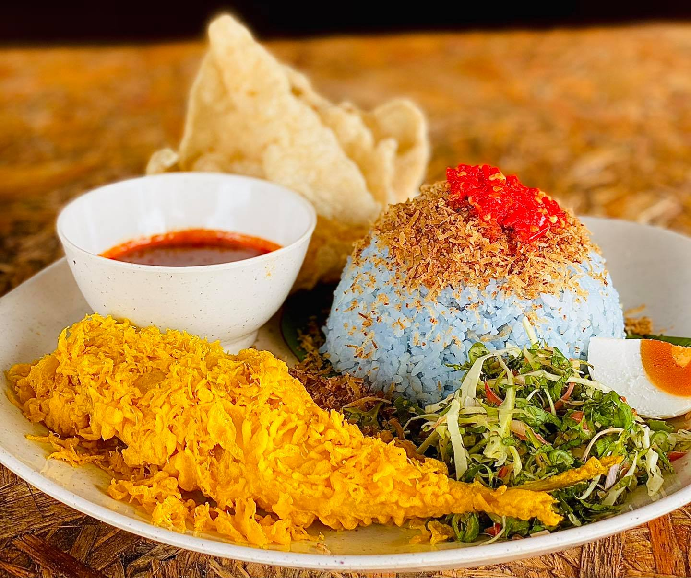

Nasi Kerabu
Home

Description
Nasi Kerabu is a staple dish originating from the East Coast of Malaysia, mainly from the state of Kelantan.
This dish is packed full components and ingredients that makes it a very lively dish.
The most striking feature of this dish is the blue colored rice as a result of using Bunga Telang (Butterfly Pea Flower) as colouring.
Accompanying the rice are stir-fried spicy gravy, fish floss, stuffed peppers, sambal, budu, and deep-fried battered fish
to round off this complete package of a dish.
Ingredients
For the blue rice:
- 3 cups of rice
- 4.5 to 5 cups of Bunga Telang water
- Plentiful of Bunga Telang
- Plentiful of hot water
- 1 teaspoon of salt
- 1 to 2 piece of lemongrass
- 3 kaffir lime leaves
For the stir-fry gravy:
- 6 stalks of dried chilies
- 6 pieces of shallots
- 4 cloves of garlic
- 1 inch of galangal
- 1 piece of lemongrass
- 1 piece of lemongrass, bruised
- 3 kaffir lime leaves
- 1 bowl of coconut milk
- 2 spoon of palm sugar
- 1 piece of tamarind slice
- 1/2 ladle of budu
- salt
- seasoning powder
For the fish floss:
- 400g of scad fish
- 2 piece of tamarind slice (asam keping)
- water
- grated coconut
- 3 piece of lemongrass
- 1 inch galangal
- 1 inch ginger
- 1 sweet onion/yellow onion
- 1/2 spoon of black pepper balls
- salt
- seasoning powder
- 1 piece of palm sugar
For the stuffed pepper (solok lada)
- 200g of scad fish
- 5 pieces of shallots
- 4 cloves of garlic
- 1 inch garlic
- 1 teaspoon ofblack pepper balls
- grated coconut
- 1 teaspoon of salt
- 1/2 spoon of sugar
- seasoning powder
- 8 piece of green chili peppers
- 200ml of coconut milk
For the sambal:
- 6 to 8 stalks of red bird's eye chilies
- 2 to 3 stalks of large red chilies
- 1/2 cup of vinegar
- 2 spoons of sugar
- 1 teaspoon salt
For the Budu Masak:
- 1/2 cup of budu
- 1 piece of palm sugar
- 1 piece of lemongrass, bruised
- 1/2 inch of ginger
- 1/2 inch of galangal
- 1/2 cup of water
For the deep-fried battered fish:
- 6 to 8 piece of indian mackerel
- 1 cup of rice flour
- 2 spoon of flour
- 1 egg
- 1 teaspoon of vinegar
- 1 teaspoon of slaked lime water
- 1 teaspoon of salt
- 1/2 teaspoon of turmeric powder
- water
- oil
For the traditional salad (ulam-ulaman):
- beansprouts
- long beans
- water celery
- Vietnamese coriander
- torch ginger flower
- cucumber
- cabbage
- fried fish crackers
- hard-boiled egg
Steps
For the blue rice:
-
Soak the Bunga Telang with hot water until the water turns deep blue and then filter the water.
-
Wash the rice and put it in a rice cooker.
- Put in the lemongrass, kaffir lime and salt. Stir the mix until the aromatic smell rises.
-
Pour 4.5 to 5 cups of Bunga Telang water and cook the rice as usual until perfectly cooked.
For the stir-fry gravy:
-
Blend dried chilies, shallots, garlic, ginger, galangal, and lemongrass in a blender until smooth.
- Heat up the cooking oil and stir-fry the blended mix until the oil separates, fragrant smelling and slightly crisp and .
-
Put in the palm sugar, crushed lemongrass and kaffir lime leaves.
-
Pour the coconut milk and stir slowly so that it is properly mixed in.
-
Put in the tamarind slice, budu, salt and seasoning powder.
-
Cook until the gravy is slightly thick and the taste is fatty, salty, sweet dan smoothly sour.
For the fish floss:
-
Boil the fish with the tamarind slice with the fish half submersed in water until fully cooked.
- After boiling the fish, separate the meat and the bones of the fish.
-
Blend lemongrass, galangal, ginger, onion, and black pepper with a little water until smooth.
- Fry the grated coconut without oil until slightly dry and brownish, then put aside.
- Put in the blended mix into a pan without oil and stir until dry and fragrant.
- Put in the fish meat, palm sugar, salt and seasoning powder.
- Mix with fried grated coconut and cook until the floss crumbles and well combined.
- Stop cooking until the floss is still slightly damp so that the texture is not too dry.
For the stuffed pepper:
- Get rid of the bones in the fish and keep the fish fillet.
- Blend the raw fish fillet with shallots, garlic, ginger, and black pepper until the paste becomes thick and smooth.
- Mix the fish paste with grated coconut, salt, sugar, and seasoning powder until well mixed.
- Rest the mix in the fridge until it becomes firm and easily used for stuffing.
- Cut the pepper vertically but not until it splits so that theres an opening to be stuffed.
- Stuff the mix in the pepper neatly.
- Arrange in a tray, sprinkle a little bit of salt and pour some coconut milk on top. Do not mix the coconut milk in the stuffing.
- Steam for 15 to 20 minute with medium heat until fully cooked and smooth.
For the sambal:
- Cut up the red bird's eye chilies and large red chilies.
- Put the chilies, vinegar, salt, and sugar in a blender and blend without water.
- Makes sure the sambal tastes balanced between spicy, sour, and sweet.
For the budu:
- Mix budu, palm suger, galangal, ginger and water in a pot.
- Cook over a small fire and mix until the palm sugar dissolves
- Continue cooking until it is slightly thick and fragrant.
For the deep-fried battered fish:
- Clean the Indian Mackerel, toss till dry and mix some salt and turmeric.
- In a bowl, mix in rice flour, flour, egg, vinegar, slaked lime water, salt and a little bit of turmeric.
- Pour cold water gradually until the mix is medium thick.
- Let it rest for 10 to 15 minutes.
- Heat up cooking oil until it's ready for frying.
- Dip the fish in the batter and fry until crispy. Sprinkle a bit of the batter into the frying pan for some crunchy flour
go along with the fish
- Be sure to not fry too many fish at the same time to maintain oil temperature and crispness.
- Stop frying until the fish is yellowish and drain the excess oil away.
Serving guide
- Cut all the ingredients for the traditional salad thinly.
- Put the blue rice on a plate.
- Arrange the floss, stuffed pepper, battered fried fish, hard-boiled egg, and traditional salad around the rice.
- Serve with the gravy, cooked budu, sambal, and fried fish crackers.
- Mix every component of the dish well for the most complete taste.
Home